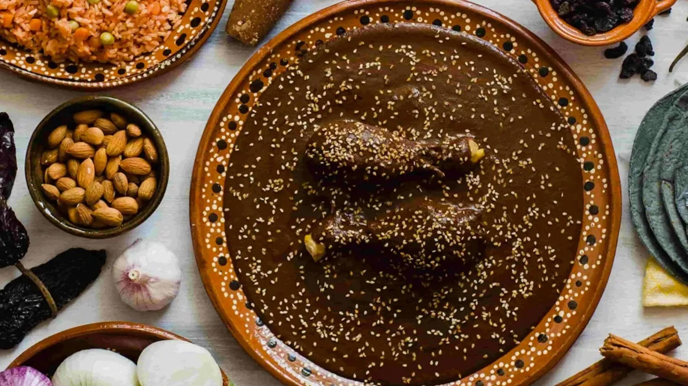

Chicken Mole

Does it come from Oaxaca or Puebla? Nobody knows...
This easy chicken mole is a real crowd-pleaser. It has a slightly sweet, slightly smoky, slightly spicy sauce. It's delicious!
Ingredients
- 1 tablespoon vegetable oil
- 1 (3 pound) chicken, cut into pieces
- 1/2 teaspoon paprika
- 1/2 teaspoon ground cloves
- 1/4 teaspoon black pepper
- 1/8 teaspoon cayenne pepper
- 1 bay leaf
- 1 onion, chopped
- 2 cloves garlic, minced
- 1 (14.5 ounce) can diced tomateoes
- 1 cup chicken broth
- 2 teaspoons brown sugar
- 1/4 cup semisweet chocolate chips
- 1/4 cup raisins
- 2 tablespoons sesame seeds
Steps
- Heat vegetable oil in a Dutch oven or large pot over medium-high heat. Add chicken pieces and cook until golden brown on all sides, about 10 minutes. Remove from the pan and set aside. Reduce heat to medium; stir in paprika, cloves, cinnamon, black pepper, cayenne pepper, and bay leaf until fragrant, about 30 seconds. Add onion and garlic; cook and stir until onion has softened and turned translucent, about 5 minutes.
- Stir in tomatoes, chicken broth, and brown sugar; bring to a simmer over medium-high heat. Once simmering, stir in chocolate chips until melted, then return chicken pieces to the pot. Reduce heat to medium-low, cover, and simmer until chicken is tender and no longer pink at the bone, 15 to 20 minutes. Stir in raisins and cook 3 minutes longer. Sprinkle with sesame seeds to serve.